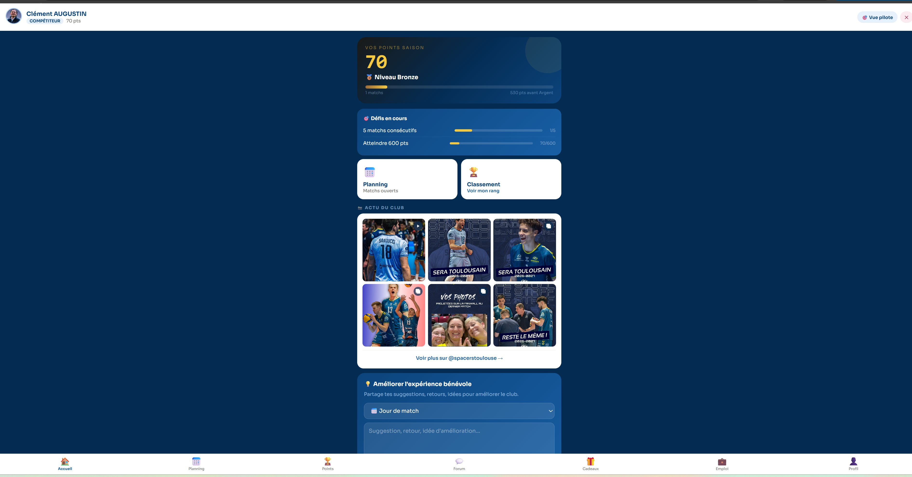
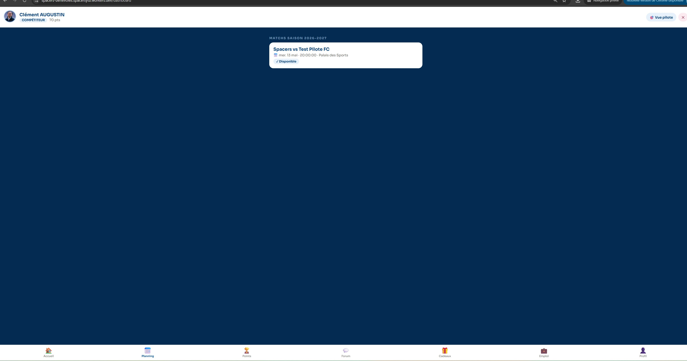
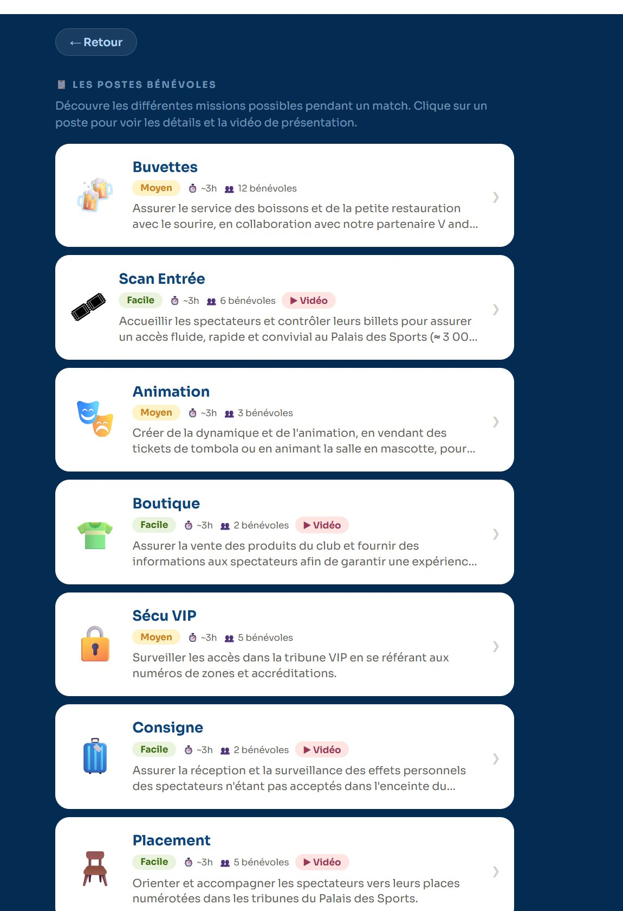
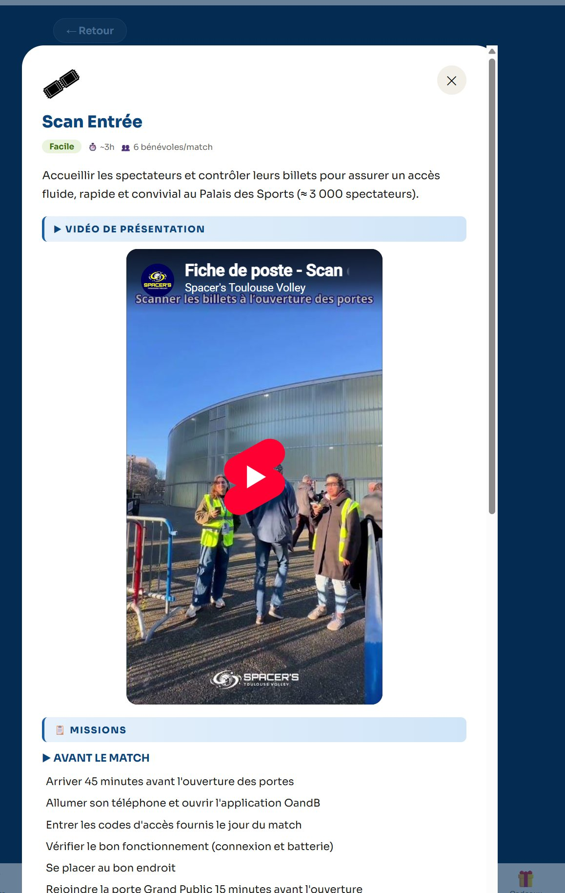
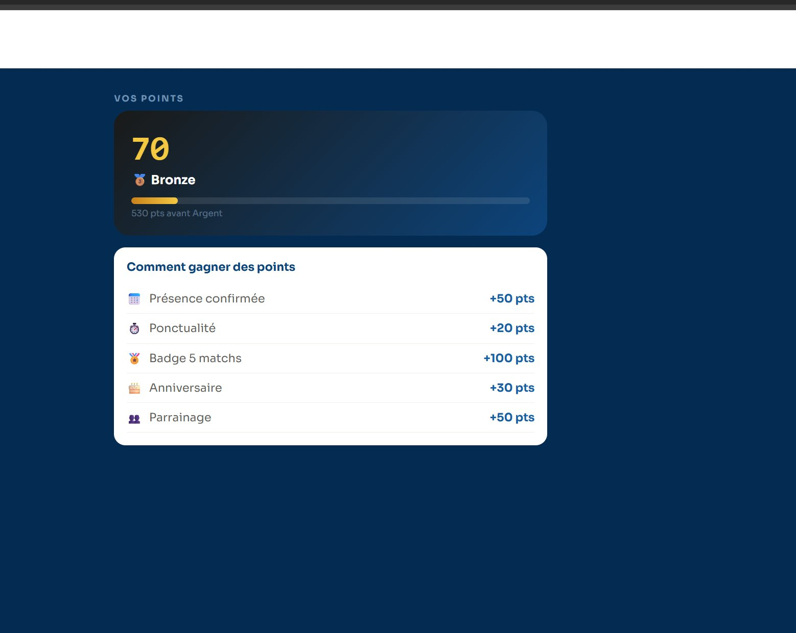
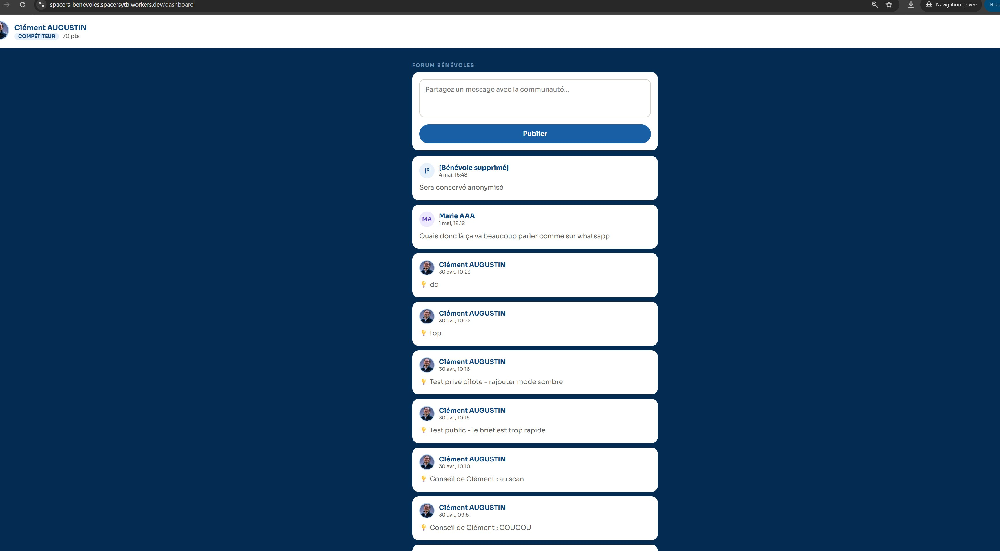
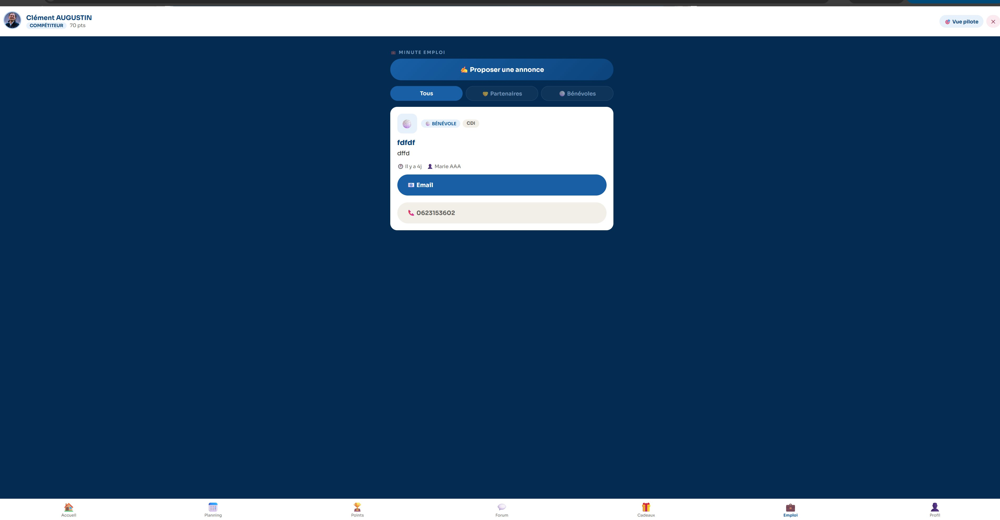
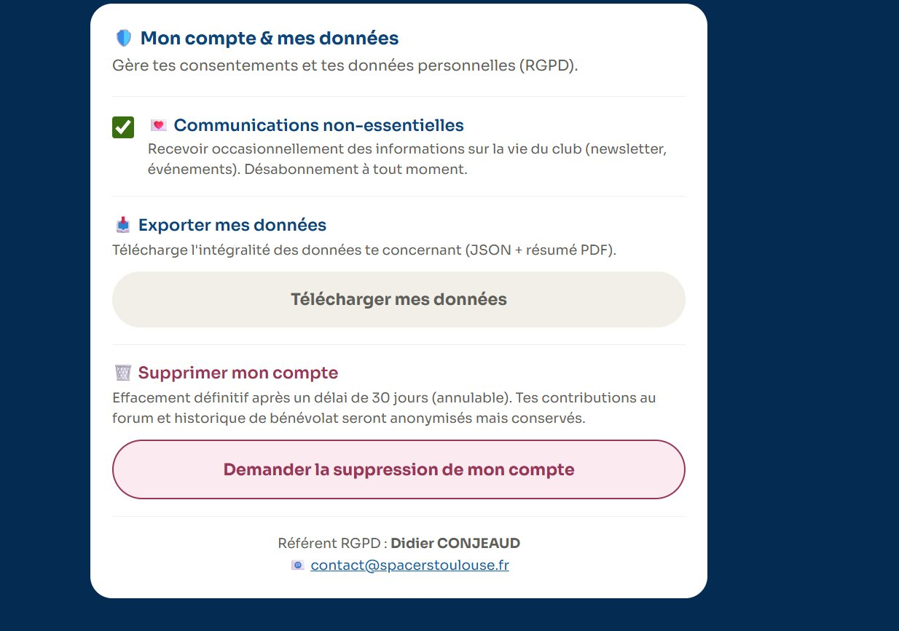
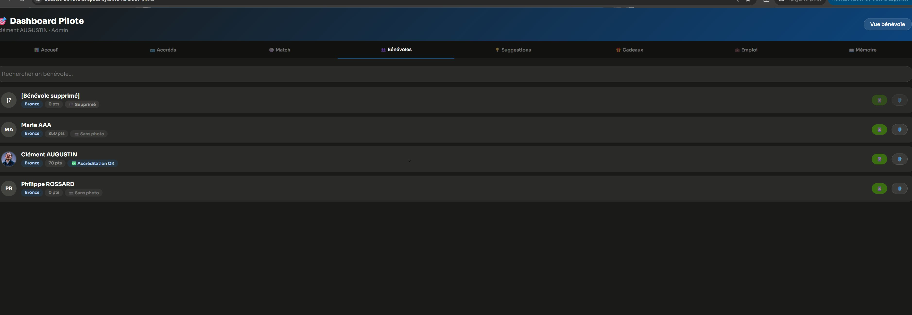

Plateforme numérique d'accompagnement des bénévoles du club, prête à être déployée pour la saison 2026‑2027. Cette note présente l'outil dans son intégralité, les garanties juridiques et techniques associées, et la décision attendue de votre part avant lancement officiel.
Auteur
Clément Augustin
Statut
Prête au lancement
Lancement visé
Saison 2026-2027
Coût annuel
0 €
Version 1.2 — document évolutif. 9 captures d'écran intégrées (accueil bénévole, planning, fiches de poste, points et barème, forum, espace emploi, mon compte RGPD, vue pilote). Une dernière capture de l'accréditation PDF générée sera intégrée en version 1.3.
Pourquoi cette application a été créée
Les Spacers font appel à un nombre croissant de bénévoles pour l'organisation des matchs à domicile au Palais des Sports André Brouat. La gestion manuelle (tableurs, échanges WhatsApp dispersés, courriels) montre ses limites : oublis d'inscriptions, désistements de dernière minute non remontés, absence d'historique consolidé, manque de reconnaissance visible des bénévoles fidèles.
L'application Spacers Bénévoles a été conçue pour répondre à quatre besoins concrets identifiés au sein du club :
Centraliser les inscriptions aux matchs et l'attribution des postes (sécurité, accueil, billetterie, buvette, etc.) dans un outil unique.
Simplifier la communication avec les bénévoles, notamment pour les rappels avant match et les changements de dernière minute.
Reconnaître l'engagement par un système de points et de paliers permettant aux bénévoles fidèles de bénéficier d'avantages auprès du partenaire boutique.
Tracer de manière transparente et conforme l'historique des missions et des consentements, dans le respect des droits des personnes.
L'objectif n'est pas de remplacer le lien humain, mais de le rendre possible à plus grande échelle, en libérant les pilotes d'une charge administrative qui les éloignait du terrain.
Le développement a été mené en interne, sans recours à un prestataire extérieur, par un membre du club agissant à titre personnel en dehors de ses missions salariées. Aucun coût de licence ni de prestation n'a été engagé : l'ensemble des outils utilisés s'inscrivent dans des offres gratuites (free tiers) parfaitement dimensionnées pour les besoins d'une association sportive.
Ce que l'application permet de faire
Voici un tour pédagogique de toutes les fonctionnalités disponibles, présentées par cas d'usage. Pour chaque grand bloc, on explique d'abord à quoi ça sert pour le bénévole ou pour le club, puis comment ça se passe concrètement.
🏠
L'accueil et le rythme du bénévole
Tableau de bord personnel · Première chose vue après connexion
En se connectant, le bénévole arrive sur son tableau de bord personnalisé. Il y voit en un coup d'œil :
Son nombre de points de saison et son niveau actuel (Bronze, Argent, Or) avec une jauge de progression vers le palier suivant.
Ses défis en cours : missions ponctuelles à objectifs (par ex. « 5 matchs consécutifs », « Atteindre 600 points »), avec barre d'avancement.
Deux raccourcis prioritaires : Planning (matchs ouverts) et Classement (rang général).
Une section « Actu du club » qui affiche directement les derniers posts Instagram du club, sans avoir à quitter l'application.
Un encart « Améliorer l'expérience bénévole » qui permet à chacun de partager une suggestion ou une idée pour faire évoluer le club.
Une barre de navigation inférieure qui donne accès, en un seul tap, aux 7 espaces principaux : Accueil, Planning, Points, Forum, Cadeaux, Emploi, Profil.

Tableau de bord d'accueil — vue compétiteur, niveau Bronze
📅
Les inscriptions aux matchs
Du planning de la saison au jour du match
15 jours avant chaque match, l'application ouvre les inscriptions automatiquement. Le bénévole reçoit un email d'ouverture, puis va dans son onglet « Planning ».
Pour chaque match à venir, il peut indiquer s'il est :
Disponible : il accepte d'être affecté à un poste si besoin.
Indisponible : il prévient à l'avance qu'il ne pourra pas être présent.
Une fois affecté à un poste par un pilote, il reçoit une notification, voit l'information sur son tableau de bord et reçoit un rappel par email à J-3 du match avec sa fiche de poste détaillée.
En cas d'empêchement de dernière minute, il peut se désinscrire ; le pilote est alors averti automatiquement et peut reprogrammer un autre bénévole.

Onglet Planning — un match Spacers à venir, statut « Disponible »
🎯
Le système de fiches de poste
Chaque mission est documentée pour réussir le jour J
Chaque poste de bénévole (sécurité, accueil, billetterie, buvette, scan entrée, animation, boutique, sécu VIP, consigne, placement, etc.) dispose d'une fiche de poste détaillée, accessible directement depuis l'application.
Sur l'écran d'accueil des fiches, le bénévole voit pour chaque poste :
Le nom de la mission avec une icône évocatrice.
Un niveau de difficulté (Facile, Moyen, Avancé) qui aide à choisir un poste adapté à son expérience.
La durée moyenne de la mission (~3h pour la majorité des postes).
Le nombre de bénévoles requis pour ce poste (de 2 à 12 selon les missions).
Un picto « Vidéo » qui indique si une vidéo de présentation est disponible.
Un résumé en deux lignes de la mission.

Liste des postes — chaque carte donne en un coup d'œil les infos essentielles
En cliquant sur un poste, le bénévole accède à la fiche détaillée qui contient :
La vidéo de présentation (hébergée sur YouTube), tournée dans les conditions réelles du Palais des Sports avec des bénévoles en situation.
Une rubrique « Missions » structurée par moment (Avant le match, Pendant le match, Après le match) avec des consignes concrètes et opérationnelles.
L'heure d'arrivée, le lieu de rendez-vous et les contacts utiles le jour J.
Les consignes de sécurité et les bonnes pratiques.

Fiche détaillée du poste « Scan Entrée » avec vidéo et checklist « Avant le match »
🪪
Les accréditations nominatives
Photo, validation par un pilote, badge imprimable
Pour pouvoir accéder aux zones réservées du Palais des Sports, chaque bénévole reçoit une accréditation nominative avec sa photo. Le processus est entièrement géré par l'application.
Comment ça marche :
Le bénévole charge une photo de profil depuis son téléphone ou son ordinateur.
Un pilote vérifie la photo (visage visible, pas de filtre, qualité suffisante) et la valide ou demande une correction.
Une fois validée, l'application génère automatiquement un PDF d'accréditation prêt à imprimer, aux couleurs du club.
La photo n'est jamais accessible publiquement : elle est stockée dans un espace privé sécurisé, accessible uniquement aux personnes habilitées du club via des liens temporaires (1 heure de validité).
[Capture d'écran à insérer] Exemple d'accréditation générée
🏆
La gamification et les récompenses
Reconnaître l'engagement par des avantages concrets
Pour chaque mission accomplie, le bénévole gagne des points qui s'accumulent dans son compte. Le barème est transparent et affiché en permanence dans l'application :
Action
Points
📅 Présence confirmée à un match
+50 pts
⏱️ Ponctualité (arrivée à l'heure)
+20 pts
🏅 Badge « 5 matchs » (5 présences cumulées)
+100 pts
🎂 Anniversaire (fête le jour J au club)
+30 pts
👥 Parrainage (recommandation d'un nouveau bénévole)
+50 pts
Trois paliers structurent la progression :
Niveau
Seuil
Avantages associés
🥉 Bronze
0 → 599 pts
Accès à l'application, équipement standard, accès groupe WhatsApp
🥈 Argent
600 → 999 pts
Bronze + 1 code de réduction Intersport / saison
🥇 Or
1000 pts et +
Argent + invitations exclusives, places match VIP, goodies
Le bénévole voit en temps réel son palier actuel, sa jauge de progression vers le palier suivant, et le barème complet pour comprendre comment optimiser ses points.

Onglet Points — affichage du palier en cours et barème transparent
Les codes de réduction sont demandés depuis l'application, traités par un pilote (qui les attribue manuellement depuis sa réserve), et délivrés au bénévole par message direct.
💬
Le forum interne
Échanger entre bénévoles, faire des suggestions au club
L'application intègre un forum interne réservé aux bénévoles inscrits. Trois usages principaux :
Discussions ouvertes : échanger des conseils, demander un coup de main, organiser un covoiturage entre bénévoles avant un match.
Suggestions au club : proposer une idée, signaler un dysfonctionnement, faire un retour sur un poste. Les pilotes lisent et peuvent répondre.
Annonces officielles : les pilotes diffusent les informations importantes (changements de planning, événements spéciaux, ouvertures d'inscriptions exceptionnelles).
Le forum est modéré par les pilotes. Les messages sont conservés à valeur informelle uniquement : ils ne se substituent pas aux échanges officiels par email.
Lorsqu'un bénévole supprime son compte ou que son compte est supprimé, ses messages restent visibles pour la cohérence des conversations, mais son identité est automatiquement anonymisée : le nom est remplacé par « Bénévole supprimé » et la photo retirée. C'est l'application concrète du droit à l'effacement RGPD, sans casser l'historique des discussions.

Forum bénévoles — noter en haut le message d'un compte supprimé, automatiquement anonymisé
💼
L'espace emploi
Annonces des partenaires et entraide entre bénévoles
Une fonctionnalité originale : l'espace emploi. Elle permet aux partenaires du club et aux bénévoles eux-mêmes de publier des annonces de recrutement, de stage, ou de prestations.
Deux usages :
Un partenaire du club (sponsor, entreprise locale) peut diffuser une offre d'emploi, atteindre directement la communauté des bénévoles, et valoriser son partenariat.
Un bénévole entrepreneur ou indépendant peut soumettre une annonce pour ses propres services. Chaque annonce est validée par un pilote avant publication, ce qui garantit la qualité et l'adéquation des contenus.
L'espace emploi est une vitrine de l'écosystème du club : il valorise les partenariats, soutient les bénévoles dans leurs activités professionnelles, et renforce l'identité communautaire des Spacers.
L'interface propose un filtrage par origine : « Tous », « Partenaires » (sponsors et entreprises liées au club) ou « Bénévoles » (annonces personnelles). Chaque annonce affiche un type de contrat (CDI, CDD, stage, prestation), un descriptif, l'auteur et les coordonnées de contact (email, téléphone) pour postuler directement.

Espace emploi — exemple d'annonce avec contact direct du proposant
📲
Les communications automatiques
Le bon message, au bon moment, sans intervention manuelle
L'application envoie automatiquement jusqu'à 4 emails par match aux bénévoles concernés :
Quand
À qui
Contenu
J-15
Tous les bénévoles actifs
Ouverture des inscriptions au match
J-3
Bénévoles affectés
Rappel + fiche de poste + lien vidéo si disponible
J-1
Bénévoles affectés
Météo, info pratique de dernière minute
J+1
Tous les présents
Remerciement + crédit des points
Tous les envois transitent par Mailjet, une solution professionnelle française, certifiée RGPD et ISO 27001 (voir section 5). Aucun envoi n'est jamais effectué depuis une boîte personnelle.
Les bénévoles peuvent à tout moment se désabonner des emails non-essentiels (newsletter, événements) tout en conservant les emails opérationnels (matchs, points). C'est un choix RGPD : les communications relatives à l'engagement bénévole relèvent de l'exécution du contrat tacite, pas du consentement marketing.
🛡️
Mon compte et mes données
Tous les droits RGPD accessibles en quelques clics
Chaque bénévole dispose d'un espace « Mon compte & mes données » dans son profil, qui lui permet d'exercer ses droits RGPD sans avoir à écrire de courrier. La carte se compose de trois zones :
💌 Communications non-essentielles : une simple case à cocher pour activer ou désactiver la newsletter et les annonces d'événements. Désabonnement à tout moment, modifiable à volonté.
📥 Exporter mes données : en un clic, télécharge l'intégralité des données personnelles au format JSON et PDF résumé.
🗑️ Supprimer mon compte : la suppression est programmée à 30 jours (annulable). Au terme du délai, les données identifiantes sont anonymisées de manière irréversible. Les contributions au forum et l'historique de bénévolat sont préservés mais anonymisés.
En pied de carte, l'application rappelle de manière permanente l'identité du référent RGPD du club (Didier CONJEAUD) et son adresse de contact (contact@spacerstoulouse.fr).

Carte « Mon compte & mes données » — accessible depuis l'onglet Profil
Toutes ces actions sont tracées dans un registre d'audit. En cas de contrôle CNIL, le club peut produire la preuve que chaque bénévole a effectivement consenti à la collecte de ses données et que ses droits ont été respectés.
🎯
Pour les pilotes : tableau de bord opérationnel
Tout ce qu'il faut pour gérer un match, en un seul écran
Les pilotes (référents bénévoles désignés par le Bureau) ont accès à un tableau de bord dédié, articulé autour de cinq onglets :
Match : créer et configurer les matchs, ouvrir les inscriptions, voir en temps réel qui s'est déclaré disponible.
Accréds : valider ou refuser les photos d'accréditation soumises par les bénévoles.
Bénévoles : liste complète des inscrits avec photo, niveau, statut. Outils RGPD intégrés (export, suppression sous 30 jours avec motif obligatoire).
Récompenses : traiter les demandes de codes Intersport, ajuster les points, attribuer des bonus.
Emploi : modérer les annonces soumises par les bénévoles avant publication.
Le pilote peut contacter directement un bénévole par WhatsApp depuis l'app, avec des messages pré-remplis selon le contexte (rappel, demande, remerciement). Cela évite de chercher manuellement un numéro de téléphone tout en gardant le bénéfice du contact direct.
Sur cette même vue, on peut observer les indicateurs de conformité RGPD directement dans la liste : les comptes supprimés apparaissent étiquetés « Supprimé » avec un identifiant générique « [Bénévole supprimé] », garantissant la préservation de la vie privée tout en conservant la cohérence des données historiques.

Dashboard pilote — onglet Bénévoles, accès aux outils RGPD à droite (icône bouclier)
🛠️
Pour les administrateurs : supervision technique
Niveau d'accès le plus élevé, réservé à la maintenance
Les administrateurs (Clément Augustin à ce jour) disposent de toutes les capacités pilote, augmentées de la supervision technique :
Configuration des paramètres généraux du club (saisons, postes, paliers de récompenses).
Supervision des tâches automatisées (envoi des emails, suppression différée des comptes, sauvegardes).
Consultation du registre des consentements RGPD à des fins d'audit interne.
Accès aux logs techniques en cas de dysfonctionnement.
Trois niveaux d'accès
L'application applique le principe de moindre privilège : chaque utilisateur ne voit que ce dont il a légitimement l'usage. Aucune information sensible n'est exposée à un niveau qui n'en aurait pas besoin.
Niveau 1 · Bénévole
Pour celles et ceux qui s'engagent
Accès personnel limité à ses propres données et aux fonctions opérationnelles communes. Ne peut pas voir les coordonnées ou statistiques d'autres bénévoles. Ne peut pas modifier la configuration du club.
Tableau de bord, planning, points, fiches de poste.
Forum (lecture et écriture), espace emploi (lecture, soumission d'annonce).
Mon compte (export, suppression, préférences).
Niveau 2 · Pilote
Pour les responsables d'organisation
Accès opérationnel élargi. Peut voir et agir sur les bénévoles, les matchs, les récompenses. Toutes ses actions sensibles sont tracées (qui, quand, pourquoi).
Tout ce qui précède + tableau de bord pilote complet.
Création et configuration des matchs.
Validation des photos d'accréditation, attribution des codes Intersport.
Modération du forum, validation des annonces emploi.
Outils RGPD pour autrui (export et suppression sous 30 jours, avec motif obligatoire).
Niveau 3 · Administrateur
Pour la supervision technique
Niveau le plus élevé. Réservé aux personnes en charge de la maintenance technique. Tout accès admin est journalisé.
Tout ce qui précède + paramétrage général du club.
Supervision des tâches automatisées et des sauvegardes.
Audit du registre RGPD complet.
Accès aux logs techniques.
À ce jour, Clément Augustin assure le rôle d'administrateur. Le Bureau désigne les pilotes parmi les bénévoles de confiance. Les rôles peuvent être ajustés à tout moment depuis l'interface admin.
Sécurité et conformité RGPD
L'ensemble des choix techniques a été guidé par l'objectif d'une conformité RGPD complète, sans compromis. Cette section détaille les garanties offertes aux bénévoles et au club.
Trois documents légaux structurent la relation
Pour encadrer juridiquement la relation entre le club et les bénévoles utilisateurs de l'application :
Mentions légales — identifient l'éditeur (TOAC-TUC Volley-Ball), le responsable de publication, l'hébergement, les éléments de propriété intellectuelle. Données réelles intégrées (RNA W313011168, SIRET 392 771 275 00022, FFVB n° 0314739).
Politique de confidentialité — décrit en français accessible quelles données sont collectées, pour quelle finalité, combien de temps elles sont conservées, et comment le bénévole peut exercer ses droits.
Règlement intérieur des bénévoles — PDF de 5 pages, 11 articles, qui pose le cadre de l'engagement (valeurs, disponibilités, jour J, confidentialité, image, récompenses, discipline, RGPD, modification, acceptation). Politique no-show souple (1ᵉ et 2ᵉ tolérées, discussion à la 3ᵉ). Tenue libre mais correcte. 18+ uniquement (avec clause d'ouverture future aux 15-17 ans si la politique évolue).
Les six droits RGPD garantis aux bénévoles
Chaque bénévole peut exercer les six droits prévus par le RGPD, directement depuis l'application :
Droit (article RGPD)
Comment c'est implémenté
Accès (art. 15)
Bouton « Exporter mes données » dans Mon compte → JSON + PDF résumé téléchargé instantanément.
Rectification (art. 16)
Le bénévole modifie lui-même ses informations (nom, téléphone, photo) depuis son profil.
Effacement (art. 17)
Bouton « Demander la suppression » → suppression programmée à J+30, annulable. À J+30, anonymisation forte irréversible.
Opposition (art. 21)
Toggle newsletter dans Mon compte. Le bénévole peut refuser les communications non-essentielles à tout moment.
Portabilité (art. 20)
L'export JSON est lisible par toute application standard, garantissant la portabilité.
Au-delà des certifications des prestataires (voir section 5), l'application elle-même intègre des mesures de sécurité de niveau professionnel :
Chiffrement complet : HTTPS/TLS pour toutes les communications, AES-256 au repos pour les données stockées.
Authentification renforcée : chaque bénévole a un compte avec mot de passe (minimum 8 caractères), email vérifié.
Cloisonnement par utilisateur : technologie Row Level Security (RLS) au niveau de la base de données, qui empêche un bénévole d'accéder aux données d'un autre, même par exploit technique.
Photos privées : les photos d'accréditation sont stockées dans un espace privé. Aucune URL publique ne permet d'y accéder. Les liens d'accès sont temporaires (validité 1 heure).
Registre d'audit : toutes les actions sensibles (consentement, export, suppression, annulation) sont tracées avec horodatage, identifiant de l'auteur, motif éventuel.
Sauvegardes automatiques : la base de données est sauvegardée tous les jours par le prestataire d'hébergement, avec rétention de 7 jours minimum.
Référent RGPD désigné
Didier CONJEAUD, co-président du club, a été désigné référent RGPD. Il est joignable à contact@spacerstoulouse.fr pour toute demande relative aux données personnelles (du bénévole ou de tiers).
Cette désignation correspond à une bonne pratique pour une association de notre taille, où la nomination d'un Délégué à la Protection des Données (DPO) externe n'est pas obligatoire, mais où la responsabilité doit être clairement attribuée.
Hébergement et prestataires techniques
L'application repose sur cinq prestataires techniques, choisis pour leur niveau de certification reconnu. Cette section présente chacun d'entre eux en toute transparence : où sont stockées les données, quelles certifications, et quel risque résiduel pour le club.
Vue d'ensemble : 100 % des données stockées en Union Européenne
L'élément essentiel à retenir : aucune donnée personnelle de bénévole n'est stockée en dehors de l'Union européenne. Les serveurs qui hébergent les données sensibles sont tous physiquement situés dans des data centers européens (Irlande, France, Allemagne, Belgique, Tchéquie).
Deux prestataires (Cloudflare et GitHub) ont leur siège aux États-Unis. Pour eux, le club est protégé par les Clauses Contractuelles Types (CCT) de la Commission européenne, qui garantissent contractuellement le respect du niveau de protection RGPD pour tout transfert international de données. Ces CCT sont automatiquement intégrées dans les accords de traitement (DPA) signés avec ces prestataires.
De plus, ces deux prestataires ne traitent que des données techniques très limitées : Cloudflare ne voit passer que les requêtes HTTP (sans contenu déchiffré, grâce au TLS de bout en bout) et GitHub ne contient que le code source de l'application, pas les données des bénévoles.
Détail par prestataire
Supabase
Base de données, authentification, stockage de fichiers
UE — Irlande
Rôle dans l'application
C'est le cœur technique. Supabase héberge la base de données PostgreSQL qui contient toutes les données des bénévoles (identité, inscriptions, points, etc.) ainsi que les photos d'accréditation et le système d'authentification.
Localisation des serveurs
Région UE-Ouest 1 (Dublin, Irlande). Aucun transfert hors UE pour les données du club.
Certifications
SOC 2 Type 2ISO/IEC 27001:2022HIPAAPCI DSSRGPD
Réversibilité
La base de données est entièrement exportable au format SQL standard. Migration possible vers tout hébergement PostgreSQL (OVH, Scaleway, etc.) en quelques heures sans perte de données.
Cloudflare
Diffusion des pages web, protection contre les attaques
USA — CCT
Rôle dans l'application
Cloudflare diffuse les pages HTML de l'application aux navigateurs des bénévoles. Il protège également contre les attaques (DDoS, bots malveillants). Aucune donnée personnelle n'y est stockée durablement : c'est un intermédiaire technique.
Localisation des serveurs
Réseau mondial avec présence européenne forte (Paris, Francfort, Amsterdam). Le trafic des bénévoles passe par les serveurs européens. Données traitées sous CCT.
Certifications
ISO 27001ISO 27701 (privacy)ISO 27018SOC 2 Type IIPCI DSSRGPD
Réversibilité
Le code de l'application est totalement indépendant de Cloudflare. Migration vers Vercel, Netlify, OVH, ou tout serveur web en moins d'une heure.
Mailjet (Sinch)
Envoi des emails transactionnels (rappels, notifications)
UE — France & Allemagne
Rôle dans l'application
Mailjet envoie tous les emails opérationnels : rappels de match J-3, notifications d'inscription, confirmations de suppression de compte, etc. C'est une solution professionnelle française, dont le siège est à Paris.
Localisation des serveurs
Data centers Google Cloud à Frankfurt (Allemagne) et Saint-Ghislain (Belgique). Aucune sortie de l'UE.
Certifications
ISO 27001SOC 2 Type IIRGPD (AFAQ AFNOR)HIPAA-ready
Mailjet est la première société au monde à avoir obtenu la certification AFAQ AFNOR de conformité RGPD (2018).
Réversibilité
Les emails sortants sont stockés dans une table interne avant envoi (système d'outbox). Migration vers SendGrid, Brevo, Postmark possible en modifiant uniquement la fonction d'envoi.
Make.com (Celonis)
Automatisations entre l'application et d'autres outils
UE — Tchéquie
Rôle dans l'application
Make.com (anciennement Integromat) automatise certaines tâches : synchronisations entre Google Sheets et l'application, envois groupés exceptionnels, déclencheurs ponctuels. C'est un outil d'automatisation visuelle, sans code.
Localisation des serveurs
Siège à Brno (Tchéquie). Hébergement AWS Frankfurt (Allemagne) pour les comptes en région EU. Make.com appartient à Celonis (Allemagne/USA), enregistré au Data Privacy Framework européen.
Certifications
ISO 27001SOC 2 Type IISOC 3RGPD
Réversibilité
Make.com n'est utilisé que pour des tâches secondaires. En cas d'arrêt, les fonctions essentielles de l'application continuent de tourner. Les automatisations seraient migrables vers n8n (open-source européen) ou Zapier.
GitHub (Microsoft)
Gestion du code source de l'application
USA — CCT
Rôle dans l'application
GitHub stocke le code source de l'application (l'équivalent du « manuscrit » d'un livre). Aucune donnée de bénévole n'y figure jamais. Ce n'est utile que pour le développement et le déploiement automatique.
Localisation des serveurs
Serveurs Microsoft Azure mondiaux. Données traitées sous Clauses Contractuelles Types pour les transferts USA.
Certifications
SOC 1 Type 2SOC 2 Type 2ISO/IEC 27001FedRAMPRGPD
Réversibilité
Le code est entièrement portable : migration vers GitLab (français/européen) ou auto-hébergement possible en quelques heures. Le code reste propriété du club dans tous les cas.
Synthèse des transferts de données
Prestataire
Données stockées
Localisation
Cadre juridique
Supabase
Identité, inscriptions, points, photos
🇮🇪 Dublin
RGPD direct (UE)
Mailjet
Emails sortants, adresses des destinataires
🇩🇪🇧🇪 Francfort, Saint-Ghislain
RGPD direct (UE)
Make.com
Données techniques transitoires
🇩🇪 Francfort
RGPD direct (UE)
Cloudflare
Trafic web (chiffré, sans accès au contenu)
🌍 Réseau mondial, traitement EU
CCT + DPA
GitHub
Code source uniquement (pas de données bénévole)
🇺🇸 USA
CCT + DPA
Analyse des risques
Une présentation honnête au Bureau implique de nommer les risques résiduels. Voici les cinq risques identifiés, leur niveau d'exposition, et les mesures de mitigation déjà en place.
Risque faible
Faille de sécurité chez un prestataire
Tous les prestataires sont certifiés ISO 27001 et SOC 2 Type II, c'est-à-dire audités annuellement par des cabinets indépendants. Le risque de faille majeure est très faible. En cas d'incident, le prestataire a l'obligation contractuelle d'informer le club sous 72 heures (RGPD art. 33), ce qui permet d'avertir les bénévoles et la CNIL le cas échéant.
Risque faible
Perte ou corruption de données
Les sauvegardes quotidiennes de la base de données sont automatisées par Supabase, avec rétention de 7 jours minimum. En cas de suppression accidentelle massive, restauration possible en quelques heures. Le code source est lui-même versionné sur GitHub, avec historique complet.
Risque modéré
Disparition d'un prestataire (faillite, rachat, fermeture du free tier)
Aucun des cinq prestataires n'est aujourd'hui en difficulté financière ; tous sont des acteurs établis depuis plus de 10 ans. Néanmoins, l'évolution des conditions tarifaires des free tiers reste possible (passage à un plan payant). Un budget annuel de l'ordre de 200 € permettrait de basculer sur des plans payants équivalents si nécessaire. Migration possible chez des concurrents européens (OVH, Scaleway) en 1 à 2 jours de travail.
Risque modéré
Dépendance à un seul mainteneur (bus factor)
L'application est aujourd'hui maintenue par une seule personne. En cas d'indisponibilité prolongée du mainteneur, l'application continuerait de fonctionner sans intervention pendant plusieurs mois (les automatismes tournent), mais aucune évolution ou correction de bug ne pourrait être réalisée. Le risque est mitigé par la documentation complète du code et le choix de technologies standard, qui permettraient à un autre développeur de prendre la suite sans difficulté majeure.
Risque faible
Demande de la CNIL ou contestation par un bénévole
Le club peut produire à tout moment : les documents légaux, le registre des consentements horodatés, l'historique des actions de chaque bénévole, et les preuves de la sécurisation technique. La désignation de Didier CONJEAUD comme référent RGPD officialise le point de contact. La conformité a été pensée dès la conception (privacy by design).
Risque élevé
Mauvais usage par un utilisateur du niveau pilote ou admin
Un pilote ou administrateur a, par construction, accès à des données sensibles d'autres bénévoles. Une utilisation abusive (export non justifié, suppression injustifiée) est techniquement possible. La mitigation repose sur la traçabilité complète : toute action de niveau pilote/admin est journalisée avec auteur, date et motif, ce qui permet une enquête rapide en cas de plainte. C'est pourquoi le Bureau doit choisir avec soin les personnes désignées comme pilotes.
Coûts et plan de continuité
L'application a été conçue pour fonctionner intégralement sur les offres gratuites des prestataires. Aucune dépense récurrente n'est nécessaire pour les volumes prévisibles d'un club de notre taille.
Budget annuel actuel : 0 €
Prestataire
Plan utilisé
Coût mensuel
Limites du plan
Supabase
Free tier
0 €
500 Mo de base, 1 Go de stockage, 50 000 utilisateurs auth.
Cloudflare
Free
0 €
100 000 requêtes/jour pour les Workers, illimité pour les pages.
Mailjet
Free
0 €
200 emails/jour, 6 000 emails/mois.
Make.com
Free
0 €
1 000 opérations/mois, 2 scénarios actifs.
GitHub
Free
0 €
Repositories illimités pour usage non commercial.
Budget de continuité estimé (si dépassement free tier)
Pour anticiper l'évolution future du club (plus de matchs, plus de bénévoles, plus d'emails), un budget de l'ordre de 200 € par an permettrait de basculer sur les plans payants intermédiaires de Supabase et Mailjet, qui couvriraient des volumes 10 à 20 fois supérieurs aux besoins actuels prévisibles. Aucune décision budgétaire n'est nécessaire à ce stade.
Plan de continuité en cas d'incident majeur
Si Supabase devient indisponible : les sauvegardes quotidiennes peuvent être restaurées sur un autre hébergement PostgreSQL (Scaleway, OVH) en moins d'une journée de travail.
Si Cloudflare devient indisponible : bascule des pages vers GitHub Pages ou Netlify (gratuits, européens) en moins d'une heure.
Si Mailjet devient indisponible : bascule vers Brevo (français), SendGrid ou Postmark, sans perte d'historique grâce à l'outbox interne.
Si Make.com devient indisponible : les fonctions essentielles continuent. Les automatisations secondaires peuvent être migrées vers n8n (open-source européen).
Si GitHub devient indisponible : aucun impact pour les bénévoles. Le code source est dupliqué localement, migration possible vers GitLab.
L'architecture a été conçue dès le départ avec la portabilité comme contrainte. Aucun verrou propriétaire n'enchaîne le club à un prestataire spécifique.
Gouvernance et maintenance
Comment le club garde la main sur l'outil ? Comment fonctionnent les évolutions et la maintenance ? Cette section précise les responsabilités et les engagements.
Propriété intellectuelle et licence d'usage
La répartition des droits sur l'application repose sur une distinction claire entre les données et le code source :
Les données (informations des bénévoles, matchs, points, photos, historique) sont la propriété pleine et entière du club TOAC-TUC Volley-Ball. Le club en est seul responsable au sens du RGPD. Aucun prestataire technique ni le développeur ne peut en revendiquer de droit.
Le code source de l'application est la propriété de son auteur, Clément Augustin. L'application a été développée à titre personnel, en dehors du cadre des missions salariées au sein du club.
Pour permettre au club d'utiliser l'application en toute sérénité, l'auteur consent une licence d'usage gratuite, non-exclusive et perpétuelle au profit du TOAC-TUC Volley-Ball, couvrant :
L'usage opérationnel de l'application pour la gestion des bénévoles du club.
L'évolution et la maintenance de l'application par l'auteur ou par toute personne désignée par le club.
L'accès complet au code source via le dépôt GitHub du club, garantissant la transparence et la possibilité d'une reprise en main.
Cette licence reste valable même en cas de cessation des fonctions de l'auteur au sein du club. En contrepartie, l'auteur conserve le droit de réutiliser, dans d'autres contextes non concurrents, les briques techniques génériques qu'il a développées.
Le Bureau peut, s'il le souhaite, formaliser ces dispositions par un document de cession ou de licence écrite signé entre le club et l'auteur. Cette formalisation est une bonne pratique recommandée mais n'est pas un préalable au lancement.
Maintenance et évolutions
Trois niveaux de maintenance sont définis :
Maintenance corrective (corrections de bugs) : réalisée à la demande, généralement sous 7 jours pour les bugs non bloquants, sous 24 heures pour les bugs critiques.
Maintenance évolutive (nouvelles fonctionnalités) : planifiée saison par saison en concertation avec le Bureau et les pilotes. Les demandes peuvent être centralisées via le forum ou directement par email.
Maintenance technique (mises à jour de sécurité) : appliquée automatiquement par les prestataires pour la majorité des cas. Les mises à jour applicatives sont déployées par l'administrateur tous les trimestres.
Transparence et auditabilité
Le Bureau peut à tout moment :
Demander un export complet du registre RGPD pour vérification.
Consulter le code source sur GitHub (avec accompagnement d'un développeur si besoin).
Demander un changement de mainteneur en cas de désaccord ou d'indisponibilité du mainteneur actuel.
Désigner un comité ad hoc pour superviser l'application si nécessaire.
Accès administrateur
L'accès administrateur est limité à une seule personne à ce jour (Clément Augustin). Le Bureau peut décider à tout moment d'élargir ce cercle, ou d'attribuer cet accès à une autre personne. La passation se ferait par transfert des identifiants et des clés d'accès aux prestataires.
Évolutions prévues
L'application est livrable à l'état actuel. Les évolutions ci-dessous sont identifiées comme pertinentes et seront proposées au Bureau pour arbitrage saison par saison.
Court terme (saison 2026-2027)
Refonte de la gamification : ajustement des paliers, ajout de badges thématiques (fidélité, ponctualité, polyvalence).
Widget Instagram : affichage des derniers posts du club dans le tableau de bord bénévole.
Refonte visuelle des accréditations PDF : charte graphique aboutie, logo plus visible, code couleur des zones d'accès.
Moyen terme (saison 2027-2028)
Application mobile native (iOS / Android), pour faciliter l'usage sur le terrain par les pilotes.
Notifications push en complément des emails, pour les événements urgents.
Module de covoiturage intégré au forum, pour faciliter les déplacements aux matchs à l'extérieur.
Long terme
Mutualisation avec les autres équipes du club (jeunes, féminines), si pertinent.
Ouverture aux mineurs (15-17 ans) avec dispositif d'encadrement et consentement parental, si la politique du club évolue. L'infrastructure technique est déjà préparée.
Décision attendue du Bureau
Cette présentation s'accompagne d'une demande concrète de validation. Le déploiement officiel de l'application à la saison 2026-2027 est conditionné à l'accord du Bureau sur les trois points ci-dessous.
Validation demandée
Trois validations formelles
Validation des Mentions légales (document accompagnant la présente note). Engagement formel sur les éléments d'identification du club, l'éditeur, et la propriété intellectuelle.
Validation de la Politique de confidentialité (document accompagnant la présente note). Engagement formel sur les finalités de traitement, les durées de conservation, et les droits des bénévoles.
Validation du Règlement intérieur des bénévoles (document accompagnant la présente note). Engagement formel sur les règles d'engagement, les politiques d'absence, et la procédure disciplinaire.
La désignation officielle de Didier CONJEAUD comme référent RGPD du club sera également entérinée par cette validation, conformément à sa qualité de co-président de l'association.
Une fois ces validations obtenues, l'application pourra être ouverte aux bénévoles à la rentrée de septembre 2026. Une communication d'inscription sera diffusée par les canaux habituels du club : site web, réseaux sociaux, groupe WhatsApp, communications presse-club.
Le Bureau peut à tout moment, à sa discrétion, demander des modifications aux documents légaux, suspendre le déploiement, ou réorienter le projet. La présente note ne constitue pas un engagement irréversible : c'est un point d'étape pour décision éclairée.